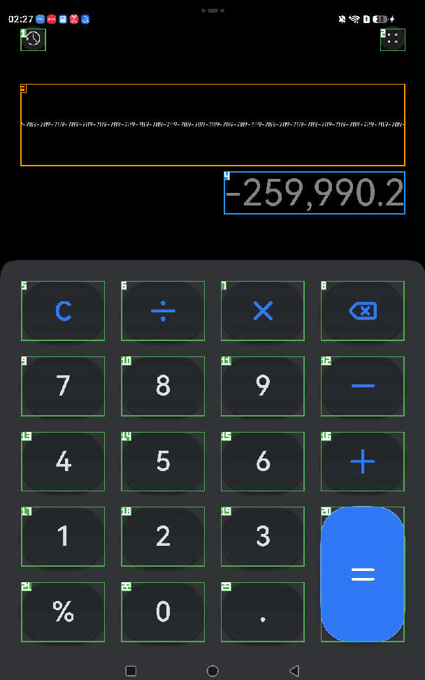
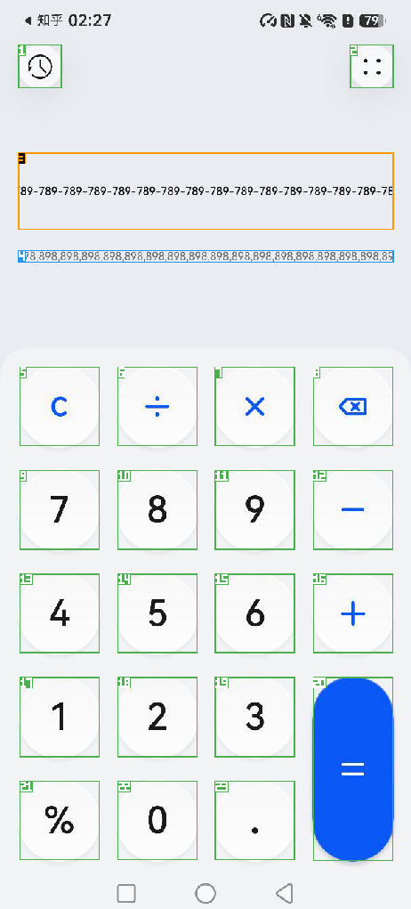
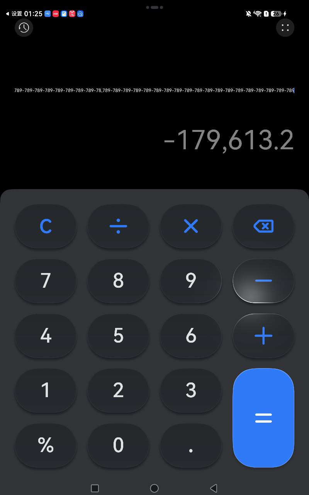
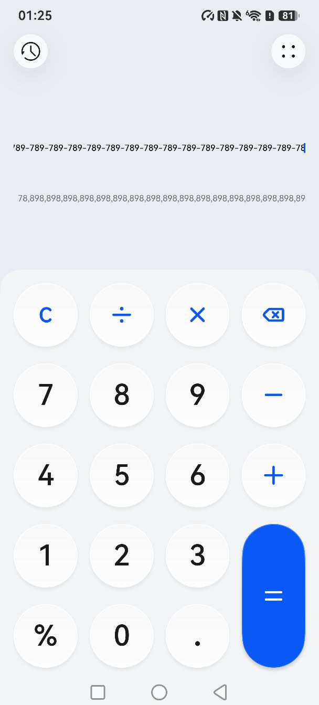

验收报告
这一页是一次完整验收的记录，也是一份可以照着走的教程。每一节都给出命令、原始输出和截图，两台机器各跑一遍：一台 10 英寸平板，一台手机。所有数字都是现场跑出来的，没有估算。
先说清楚版本。验收从 0.9.3（提交 6ea19a2）开始。跑的过程中发现并修掉了 7 个问题，所以能力矩阵和治理那几节测的是加上这些修复的代码——它们就是 0.9.4。步骤 2 和 步骤 9 当时核对的仍是 npm 上的 0.9.3，两者相差的就是那 7 条；0.9.4 发布后，包里的代码与这一页的数字一致。
读法有两种。想知道这个包能不能用，看一页结论和能力矩阵。想自己验一遍，从步骤 0往下照做，每条命令都可以直接复制。
一页结论
| 步骤 | 验的是什么 | 7544d645（平板） | 6c585f5b（手机） |
|---|---|---|---|
| 0 | 环境：Node、hdc、两台设备可见 | ✓ | ✓ |
| 1 | 无设备自动化：类型检查、单元测试、官网检查、打包清单 | ✓ 860 个测试 / 68 个文件 · 141 个文件 · 1.09 MB | |
| 2 | 干净目录安装当时已发布的包，核对导出与文件 | ✓ 126 个运行时导出 · VERSION 0.9.3 · ESM-only | |
| 3 | 连接、诊断、截图、UI 树 | ✓ | ✓ |
| 4 | 16 项能力矩阵 + 设备侧测试 | ✓ 16/16 | ✓ 16/16 |
| 5 | 接管页 10 个场景（含 10 分钟稳定性） | ✓ 10/10 | ✓ 10/10 |
| 6 | 来源校验 7 种握手 | ✓ 7/7 | ✓ 7/7 |
| 7 | MCP 21 个工具、Skill 安装、交接闭环 | ✓ | ✓ |
| 8 | 只读、应用白名单、状态、接管与交还、审批 | ✓ | ✓ |
| 9 | npm 版本、shasum、GitHub Release、官网 | ✓ 当时 latest 为 0.9.3 · shasum 6554253b | |
验收过程中发现并修掉了 7 个真实问题，其中 3 个是产品缺陷——包括「应用白名单没有覆盖 launch」和「resume 不认 HDC_TARGET」。清单在最后一节，每条都有对应测试。
两台设备
| 项 | 7544d645 | 6c585f5b |
|---|---|---|
| 型号 | MLR-AL10（平板） | BRA-AL00（手机） |
| 系统 | OpenHarmony 7.0 · API 26 | OpenHarmony 7.0 · API 26 |
| ABI | arm64-v8a | arm64-v8a |
| 分辨率 | 1600×2560 | 1216×2688 |
| 截图尺寸 | 800×1280（一半） | 608×1344（一半） |
| agent.so md5 | ebd787f9…（两台一致，与包里那份相同） | |
两台设备都通过 hdc 走 USB 连接。报告里只出现 8 位标签（设备序列号的 SHA-1 前 8 位），不出现序列号本身——这个仓库是公开的。
0 · 环境
先确认三件事：Node 版本、hdc 在哪、有几台设备。如果机器上装过 DevEco 并设了 HDC_SERVER_PORT，要先清掉——它会把 hdc 指向另一个服务端，hdc list targets 就会看不到设备。
unset HDC_SERVER_PORT
export HDC_PATH="D:/Application/DevEco Studio/sdk/default/openharmony/toolchains/hdc.exe"
node -v # v26.13.0
"$HDC_PATH" list targets<一台平板的序列号>
<一台手机的序列号>两台都在。这一步的输出里序列号是明文，所以下面的报告统一换成标签（序列号 SHA-1 的前 8 位）：平板是 7544d645，手机是 6c585f5b。
1 · 无设备自动化
不接设备就能跑的部分。四条命令，任何一条失败都不必往下走。
npm run typecheck # 主代码类型
npm run typecheck:tests # 测试与脚本的类型
npm test # 单元测试
node scripts/check-site.mjs # 官网：链接、锚点、外部请求、无 JS 可读
npm pack --dry-run --json # 打包清单实测输出：
npm run typecheck → exit 0
npm run typecheck:tests → exit 0
npm test → 68 passed (68) · 860 passed (860) · 65.6 s
node scripts/check-site.mjs → video 30.0s · runtime ok · site ok
npm pack --dry-run --json → version 0.9.3 · files 141 · size 1090753 · unpacked 3241923check-site.mjs 不只是检查文件在不在：它逐页核对版本号、锚点、禁止外部请求（一个静态页不该向任何第三方发请求），并用无头 Chrome 打开页面确认脚本真的跑起来了。
2 · 装包验证
跑测试验证的是源码。这一步验证发到 npm 上的那个包：在一个空目录里装它，然后从外面看它。下面是当时那次运行（0.9.3 是当时的 latest）；以后重跑把版本号换成当时的 latest 即可。
mkdir clean && cd clean
npm init -y
npm install uitest-sdk@0.9.3node --input-type=module -e "
import * as sdk from 'uitest-sdk';
console.log('exports', Object.keys(sdk).length);
console.log('VERSION', sdk.VERSION);
const e = new sdk.DeviceStateError('device_offline', 'x', 'ENODEVICE');
console.log('state', e.state, 'instanceof UitestError', e instanceof sdk.UitestError);
"exports 126
VERSION 0.9.3
state device_offline instanceof UitestError true再确认两件容易漏的事：包里的扩展文件在不在，以及它是不是真的 ESM-only。
$ ls node_modules/uitest-sdk/
CHANGELOG.md LICENSE NOTICE README.md SECURITY.md assets dist docs examples package.json
$ ls node_modules/uitest-sdk/assets/*/
arm64: agent.so libscreen_casting.z.so
x86_64: agent.so
$ node -e "require('uitest-sdk')"
Error: ERR_PACKAGE_PATH_NOT_EXPORTEDrequire 失败是预期行为：这个包只导出 ESM。在 CommonJS 项目里用会立刻报错，而不是在运行到一半时才出问题。
3 · 连接与诊断
从这一步开始接设备。先把「这台机器上的这个包，能不能驱动这台手机」问清楚，再谈功能。
node dist/bin.js doctorsettled · doctor
targets: 7544d645
display: 1600x2560
capabilities: waitForIdle=yes findComponent=yes waitForComponent=yes findWindow=yes multiTouch=yes
session: task "doctor" · device 7544d645 · read-only false · confirm payments,finance,deletes,sends · apps all手机上是同样的结果，display: 1216x2688。doctor 做的是：读 ABI → 比对设备上的 agent.so 与包里那份（md5）→ 确认 8012 端口上有 daemon 在听 → 逐项探测 hypium 能力。
接着看屏幕、截图、UI 树。三个命令都落在同一个应用上，这样三张图能互相对照：
node dist/bin.js launch --app calculator
node dist/bin.js screenshot --out shot.jpg
node dist/bin.js inspect --out inspect.jpg --html inspect.html
inspect 把每个元素框出来并编号，编号就是 ref
验收用的截图统一在计算器上拍，不是随手拍当前屏幕。原因很实际：真机上开着的是用户自己的应用——信息流、聊天、个人主页，截图会连别人的名字和头像一起进公开仓库。计算器只有键盘和一行结果，翻页也不会有个人内容。
4 · 能力矩阵
一条命令跑完 16 项能力，每项都截图、写日志、算耗时，最后生成一份对照表。两台设备一起跑：
npx tsx scripts/acceptance.ts --targets <平板序列号>,<手机序列号>| 能力 | 验的是什么 | 7544d645 | 6c585f5b |
|---|---|---|---|
connect | 连上并读到显示尺寸 | ✓ 1600×2560 | ✓ 1216×2688 |
click | 坐标点击落到设备 | ✓ 38 ms | ✓ 42 ms |
swipe | 300 ms 滑动手势 | ✓ 489 ms | ✓ 469 ms |
touch | 原始 down / move / up 协议 | ✓ ok | ✓ ok |
triggerKey | 系统按键（电源键） | ✓ ok | ✓ ok |
captureLayout | 读 UI 树 | ✓ 232 节点 | ✓ 194 节点 |
captureScreen | JPEG 截图 | ✓ 368 ms · 46 KB | ✓ 268 ms · 42 KB |
cropToWindow | 按应用裁剪截图 | ✓ 计算器 · 64 KB | ✓ 计算器 · 59 KB |
streamScreen | 增量帧流 | ✓ 10.9 fps | ✓ 11.0 fps |
createCast | H.264 投流 | ✓ h264 | ✓ h264 |
createCastRecord | 录 MP4 | ✓ 220 KB | ✓ 374 KB |
dualCast | 同一设备两路投流 | ✓ 两路都出帧 | ✓ 两路都出帧 |
dumpLayout | 窗口级 UI 树 | ✓ 232 节点 | ✓ 194 节点 |
queue | 10 个调用排队执行 | ✓ 47 ms | ✓ 75 ms |
rpcDuringStream | 投流时仍能发命令 | ✓ 8 ms | ✓ 10 ms |
streamUiActions | 事件流会话 | ✓ 可开 | ✓ 可开 |
32/32 通过，0 失败，0 跳过。设备侧测试（npm run test:device）两台各 18 通过 / 1 跳过——跳过的是 x86_64 模拟器专用的那一条，真机上不适用。

streamScreen 抓到的最后一帧（10.9 fps）
一个陷阱：streamScreen 只在画面变化时出帧。所以它测出来的 fps 一半是传输、一半是「屏幕上有没有东西在动」。第一版脚本在静止的桌面上跑出 0.2 fps 却报了 PASS——那是在说「这台手机不会投屏」，而实际上它投得很好。现在低于 3 fps 直接判失败，并提示换一个会动的页面。
5 · 接管页
live 是给人用的：浏览器里看到手机画面，点「接管」之后，鼠标和键盘直接落在手机上。这一节验的是这条链路，10 个场景，最后一个是 10 分钟不间断输入。
npx tsx scripts/acceptance-live.ts --target <设备>| 场景 | 验的是什么 | 7544d645 | 6c585f5b |
|---|---|---|---|
| readonly guard | 没接管时，注入的点击不生效 | ✓ | ✓ |
| takeover | 接管成功；第二个页面被拒 | ✓ 26 ms | ✓ 33 ms |
| tap | 点击后画面确实变了 | ✓ p50 13.6 ms | ✓ p50 3.5 ms |
| long press | 长按弹出系统输入助手 | ✓ | ✓ |
| scroll | 竖划后内容变化 | ✓ | ✓ |
| keyboard | 输入中文并回车，结果页出现该词 | ✓ | ✓ |
| browser keyboard | 真实页面：拼音组合期间不上屏 | ✓ | ✓ |
| system keys | 返回、Home、再切回来 | ✓ | ✓ |
| pinch | 双指放大，画面差异超阈值 | ✓ 51.8 | ✓ 63.4 |
| stability | 10 分钟连续输入 + 换手 | ✓ 18.33 fps | ✓ 11.76 fps |
两台都是 10/10。稳定性那一项值得单独说：平板上 600 秒跑了 1170 次输入，帧率从头到尾稳定在 18 fps（基线 17.95）；手机上 1169 次，11.76 fps（基线 12.43）。换手（另一个页面接管）的确认延迟两台都是 31–32 ms。
接管页的实拍已经在首页的接管演示里，这里不再重复。
6 · 安全
0.9.3 修的是一个真实漏洞：任何你打开的网页都能连上投屏页并接管手机。原因是浏览器对 WebSocket 不做同源限制，而端口是固定常量。修法是在服务端校验 Origin。
这一节不测函数，测线上那台服务器：真的建 TCP 连接、真的发握手，看它回什么。
npx tsx scripts/acceptance-security.ts --targets <设备1>,<设备2>| 握手 | 期望 | 7544d645 | 6c585f5b |
|---|---|---|---|
| 页面自己的来源 | 101 | ✓ 101（8 ms） | ✓ 101（5 ms） |
| 别的网站 | 403 | ✓ 403（1 ms） | ✓ 403（0 ms） |
Origin: null（file://、沙箱 iframe） | 403 | ✓ 403 | ✓ 403 |
| DNS rebinding（Host 是域名） | 403 | ✓ 403 | ✓ 403 |
| 同机另一个端口 | 403 | ✓ 403 | ✓ 403 |
没有 Origin 头（程序化客户端） | 101 | ✓ 101 | ✓ 101 |
| 错误的路径 | 404 | ✓ 404 | ✓ 404 |
14/14。被拒的连接回的是 403 而不是先升级再断开——握手不成立，帧、布局、客户端 id 一个字节都不发出去。
怎么读这几行：第 1 行是你自己打开页面时会发的头，必须放行。第 2 到 5 行是四种攻击面——你随便打开的网站、沙箱里的页面、把域名解析到 127.0.0.1 的 rebinding、以及同一台机器上另一个本地服务。四个都必须被拒，否则「打开一个网页就能接管手机」这件事仍然成立。第 6 行放行的是不是浏览器的客户端：它不受页面约束，本来就能自己跑 hdc。
7 · MCP 与 Skill
给 Agent 用的部分。三个问题：能不能注册进 Agent 的配置、Agent 能看到哪些工具、交接给人的闭环走不走得通。
node dist/bin.js connect --agent claude
node dist/bin.js install-skill --dir <某个目录>connect 只改 Agent 自己那一行配置（注释和顺序都保留），然后把 Skill 写进该 Agent 会读的目录。install-skill 可以只写一个目录，方便先看内容：
installed skill in 1 directory
.work-bench/accept/step7/skill/SKILL.md
.work-bench/accept/step7/skill/REFERENCE.mdMCP 侧实测：握手返回 serverInfo: uitest-phone 0.9.3，tools/list 给出 21 个工具：
uitest_observe uitest_tap uitest_type uitest_swipe uitest_double-click
uitest_drag uitest_fling uitest_pinch uitest_key uitest_wait-for
uitest_read-list uitest_scroll-until uitest_launch uitest_apps uitest_window
uitest_doctor uitest_screenshot uitest_inspect uitest_report uitest_status
uitest_handoff真调一个 uitest_observe，返回的就是 Agent 看到的那段文本：
screen 1600x2560 · app: com.ohos.sceneboard · rotation 0°
[2] button "11月18日, 星期三, 十月初十" @799,462
[3] button "QuickToolsHotZone" @202,2325
[5] button "单指双击即可执行" @1397,2325最后是交接闭环——Agent 遇到只有人才能做的一步（登录、验证码、解锁）时，把手机交出去，然后停下等 resume：
npm run acceptance:handoffok · MCP handshake
ok · tools/list exposes uitest_handoff
ok · uitest_handoff requires reason
ok · the session owns the device first (got settled)
ok · handoff status is handoff (got handoff)
ok · handoff is an MCP error result (stop, do not retry)
ok · the reason is in the agent-facing text
ok · exactly one lease holds the device
ok · lease task is "held by a person"
ok · lease is marked as a person's hold
ok · lease records the reason
lease tag: 7544d645
ok · same session stops with lease_held (got lease_held)
ok · agent is told a person has the phone
ok · lease_held repeats the reason
ok · resume hands the phone back
ok · same session continues after resume (got settled)
handoff acceptance ok16 项全过，两台都跑了。中间那句 lease_held 是关键：交出手机之后，同一个会话再想操作设备会被明确拒绝，并重复一遍「人正在用」的理由——不是静默失败，也不是无限重试。
8 · 治理与策略
让 Agent 能动手，但只在划定的范围里。四个开关：只读、应用白名单、接管、审批。
只读
$ node dist/bin.js type --text "WLAN" --read-only
blocked_by_policy · rule: read-only
typing is disabled in read-only mode
$ node dist/bin.js tap --ref 267 --read-only
blocked_by_policy · rule: read-only
deletes: 重置第二行值得注意：被拦下来的理由不是「你说了只读」，而是「这一步会触发 deletes 规则，命中的词是『重置』」。策略先把动作归类，再决定拦还是问。
应用白名单
$ node dist/bin.js launch --app calculator --apps calculator
settled
launched com.huawei.hmos.calculator · CalculatorAbility
$ node dist/bin.js launch --app settings --apps calculator
blocked_by_policy · rule: scope
com.huawei.hmos.settings is outside the task's app list (com.huawei.hmos.calculator)白名单里写的是短名 calculator，拦下来时说的是完整 bundle id——因为名单在会话开始前就被解析成了真实包名。这条正是验收时发现的问题，见下一节。
接管与交还
$ node dist/bin.js hold --reason "acceptance: person takes the tablet"
held · the device is yours
device: 7544d645
$ node dist/bin.js status
error: lease_held · this device already runs task "held by a person"
A person is using the phone. Stop and wait; they will run `uitest-phone resume`.
$ node dist/bin.js resume
released · 7544d645 is free for the next command审批
默认策略下，「删除、支付、金融、发送」这四类动作不会直接执行，而是先停下来要一个 id：
$ node dist/bin.js tap --ref 267 --json
{"status":"approval_pending","code":3,
"text":"approval_pending · approval_id: 5020f7405ca4 · rule: deletes\nmatched \"重置\"\n
Answer by repeating the same command with --approval-id 5020f7405ca4 (once),
plus --approval-scope task or --approval-scope always, both scoped to this app."}人看过之后，用同一个命令加上 --approval-id 放行。id 只能用在那一个具体步骤上：拿别的步骤的 id 来用会明确报错，而不是悄悄放行。
9 · 发布产物
$ npm view uitest-sdk version dist-tags
version: 0.9.3
dist-tags: { latest: "0.9.3", legacy: "0.3.0" }
$ npm view uitest-sdk dist.shasum
6554253b3ab5a89eec83c2f93dcba729172482b9这个 shasum 与发版当时（提交 6ea19a2）本地 npm pack 算出来的一致，说明发上去的字节就是那次打包出来的字节。验收修完那 7 条之后代码变了，所以 0.9.4 是另一次打包、另一个 shasum——发布后可以同样用 npm view uitest-sdk dist.shasum 核对。另外三项：
- Git tag：
v0.9.3指向提交6ea19a2。 - GitHub Release：
0.9.3 — 投屏页只接受自己的来源，已发布。 - 官网：
node scripts/check-site.mjs通过，版本号从dist/version.js读，不写死。
验收中发现并修掉的问题
验收的价值不只是「跑通了」。这一轮跑下来，有 7 个问题只有真的接上两台设备、按顺序走完才会暴露。每一个都先写了会失败的测试，再改代码。
| 问题 | 怎么发现的 | 影响 |
|---|---|---|
--apps 不覆盖 launch |
白名单写 --apps calculator，然后试着启动设置——它启动了 |
白名单最该管住的就是「换到别的应用」，恰恰漏了 |
--apps 只认完整包名 |
修完上一条后，--apps calculator 把计算器也拦了 |
名单写对了却谁也用不了；现在与 launch 同一套解析 |
resume 不认 HDC_TARGET |
两台设备同时插着跑交接验收，resume 报「多台设备」 |
刚交出的手机收不回来；Device 和 HdcRunner 都认这个变量 |
| 两次 doctor 给出两个设备标签 | 同一台设备，doctor 说 dev-bff94761，会话说 7544d645 |
报告里的标签对不上设备；两处哈希现在共用一份实现 |
| 两台设备的报告列互相覆盖 | 两台一起跑，第二台的 16 行结果把第一台的盖掉了 | 双设备报告只剩一台的数字；列键改成设备标签 |
| 前台应用认错 | 屏幕上是知乎，apps --current 说 WPS |
设备会把两个 mission 都标成 FOREGROUND；改取启动时间最新的那个 |
| 通知栏关掉后仍被判为打开 | 手机上 closeShade() 208 ms 就返回了，紧接着一次读取还是「打开」 |
守卫本身误报，导致一次已经成功的运行被判失败；改成有上限的等待 |
另外还有两个验收工具本身的缺陷，同样重要：
- 失败时把证据写进了仓库。一次失败的运行在
docs/acceptance/screenshots/留下了一张第三方个人主页的截图。现在证据目录可以用UITEST_ACCEPTANCE_DIR改到仓库外，只有人看过之后才复制进来。 - 静止的屏幕被当成「投屏正常」。桌面上跑出
0.2 fps却报了 PASS。现在低于 3 fps 判失败，并说明这是画面没动，不是传输不行。
自己复现
按上面的顺序走一遍，大约需要：
| 步骤 | 耗时 | 需要设备 |
|---|---|---|
| 0 · 环境 | < 1 分钟 | 是 |
| 1 · 无设备自动化 | 约 2 分钟 | 否 |
| 2 · 装包验证 | 约 1 分钟 | 否 |
| 3 · 连接与诊断 | 约 1 分钟 | 是 |
| 4 · 能力矩阵 | 约 3 分钟 / 台 | 是 |
| 5 · 接管页 | 约 13 分钟 / 台（含 10 分钟稳定性） | 是 |
| 6 · 安全 | 约 1 分钟 / 台 | 是 |
| 7 · MCP 与 Skill | 约 2 分钟 | 是 |
| 8 · 治理与策略 | 约 5 分钟 | 是 |
| 9 · 发布产物 | 约 1 分钟 | 否 |
四条建议，都是这轮踩出来的：
- 先把设备放在一个没有个人内容的界面上。截图是要给人看的，验收脚本默认在计算器上拍。
- 一次只跑一台设备。同一个设备不能同时被两个验收占用——设备侧的锁会拒绝第二个，这不是 bug，是设计。
- 看失败的第一行，不要看最后一行。
FAILED:后面那句通常已经写清了原因（比如「通知栏还开着」「屏幕没在动」），比堆栈有用。 - 验收前先决定「测的是哪个版本」。这一轮的矩阵从
0.9.3开始，测的却是修完那 7 条之后的代码——也就是0.9.4。想让报告和包完全一致，要么先发版再验收，要么在报告里写清楚差在哪里（这一页选了后者）。
这一页的所有数字来自 2026-11-17 夜间的两轮完整运行，机器是同一台 Windows 主机、同一个 hdc、同样的 USB 连接。换一台机器或换一根线，耗时会有差异；判定标准（通过/失败）不会。